우리는 10월 17일에 만남을 시작했고, 매년 이 날이 돌아올 때마다 크고 작은 여행으로 기념일을 챙기곤 했다. 올해에도 어김없이 이 날이 왔다. 올해는 우리가 만난 지 만 6년이 꽉 차는 해다. 그동안 다섯 번의 기념일을 지나왔지만, 우리 둘 다 백수인 상태로 맞이하는 기념일은 이번이 처음이었다. 우리는 이 신분을 마음껏 누리기 위해, 기념일 당일이 토요일이었음에도 불구하고, 굳이 앞뒤의 평일을 포함시켜 4박 5일의 여행을 준비했다. 돈보다 더 중하다는 시간을 가지고 언제 또 이런 사치를 부려 보겠는가.
비행기는 오후 17:40에 청주에서 출발했다. 둘 다 일을 안 하니, 짐을 싸는 데에도 시간이 남아돌았다. H는 오전에 영어회화 공부도 했고 운동도 하던 대로 다녀왔다. 여유롭게 집안 청소도 하고, 점심도 요리해 먹고, 쓰레기도 다 버린 뒤 비로소 짐을 싸서 공항으로 향했다. 대전에서 청주공항까지는 차로 한 시간 정도면 갈 수 있어서 늘 마음이 가볍다. 이 날은 휴가철도 공휴일도 아닌 평일이었으니, 사람도 평소보다는 적을 터였다… 그렇게 생각했다. 도착할 때까지는.
청주공항에는 출국장 건물 가까이에 주차장이 여러 곳 마련되어 있다. 나는 지금껏 청주공항을 수십 번은 이용했지만, 건물에서 가장 가까운 제1, 2주차장이나 주차타워를 사용해 본 횟수가 한 손을 채우지 못한다. 그래도 지금까지는 남들도 다 움직이는 휴일에 왔으니까 어쩔 수 없는 거라고, 더 부지런한 사람들이 있는 것뿐이라고 생각했는데, 그게 아니었다. 나는 그냥 제1주차장을 쓸 수 없는 운명인 것이었다. 제 1, 제2, 제3 … 돌고 돌아 결국 나를 받아주는 곳은 임시주차장의 흙밭이었다. 짐을 지고 주차장에서 출국장까지 걸어가는 걸음은 언제나 무겁다. 심지어 여유를 부리다가 막상 공항에 도착했을 때에는 시간이 다소 빠듯해졌고 하늘에서는 비도 조금씩 내렸다. H가 공항 앞에서 먼저 내려서 출국장 줄을 서 있는 동안, 나는 임시주차장에서 출국장까지 달렸다. 비를 뚫고. 빌어먹을.
무사히 출국수속을 마치고, 면세점에서 술을 인당 두 병씩 받았다. 여행 전에 인터넷으로 미리 주문해 둔 진과 위스키였다. 우리는 진토닉을 좋아하는데, 최근에 알게 된 진 마레Gin Mare가 굉장히 마음에 들어서 집에 쟁여두고 말아 먹으려고 샀다. 일반 진 마레와 진 마레 카프리라는 제품을 하나씩 샀고, 쇼핑하다가 병이 예뻐서 고른 사일런트 풀Silent pool 진도 한 병 샀고, 아일레이 미스트Islay Mist라는 위스키도 한 병 샀다. 병 하나하나를 깨지지 않게 부풀린 비닐로 잔뜩 감싸주는 바람에 짐 부피가 순식간에 두 배로 부풀었다.
그리고, H는 미리 주문한 내 생일선물을 여기에서 하사하셨다. 무엇인지는 여행 며칠 전에 들어서 이미 알고 있었지만, 실제로 보니 그 빛깔이 은혜롭고 영롱하였다. 감사합니다. 충성.
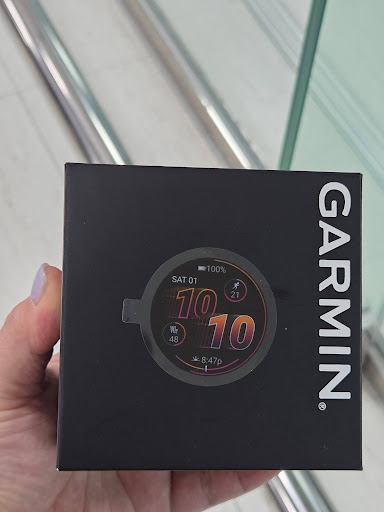
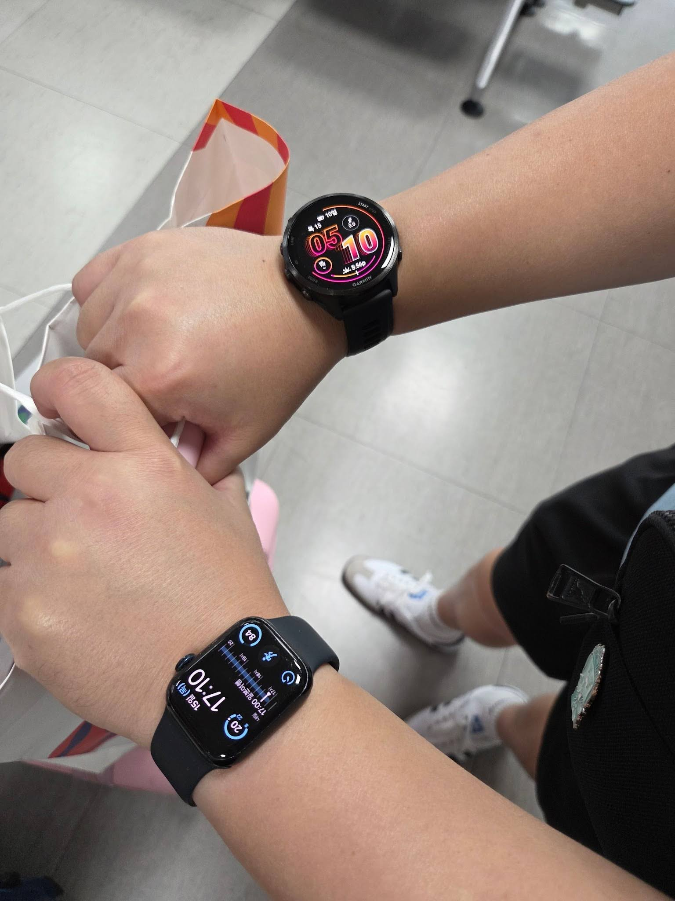
비록 나의 운동 능력에 비해서는 과분한 장비라고 볼 수 있지만, 무릇 받은 선물은 적극적으로 써줘야 하는 법이다. 곧바로 착용샷 촬영 후 어플을 다운받고 실사용에 들어갔다. 과연 애플 워치와 가민 워치가 측정하는 운동 혹은 움직임 기록은 얼마나 비슷할 것인가. 아직 제대로 움직임을 측정하고 저장하는 법도 몰랐지만, 어떻게든 대충 차고 다니다 보면 뭐라도 나올 거라고 생각했다.
선물을 착용하고 부피가 늘어난 짐을 잔뜩 정리하고, 새로 나온 쓰레기도 버리고 하니 금방 탑승 시간이 되었다. 나고야까지는 두 시간 조금 안 되게 걸렸고, 예상보다 비행이 빨라서 랜딩하니 대충 19:10 정도였다. 이 날의 계획은 이자카야 한 군데 가는 게 전부였다. 추성훈 아조씨의 유튜브에 차승원 배우와 함께한 나고야 여행기가 올라와 있었는데, 우연히도 나고야 여행을 가기 직전에 H가 그 영상을 발견해서 정독 후 맛있어 보이는 곳을 골라뒀다. 무려 오토시로 생선회를 준다지 뭔가.
한데, 21시로 예약을 걸어 둔 그 이자카야에 막상 가려니 시간이 애매했다. 우리의 동선은 나고야 츄부 국제공항 → 나고야 역 → 숙소 → 이자카야였는데, 공항에 도착하고 보니 우리가 미리 예약해 둔 나고야행 메이테츠 특급 자유석을 탈 시간이 빠듯했다. 입국수속 줄이 상당히 길었기 때문이다. 이자카야 예약 시간을 확실하게 맞추려면 뮤스카이를 새로 예매해야 했는데, 그러려면 공항의 메이테츠 터미널 입구에서 새로 티켓을 구매해야 했는데 현금이 없었다. 지금에야 상황을 이해하고 있으니 문장으로 쉽게 적을수 있지만, 이 때에는 메이테츠 특급이 뭐고 뮤스카이가 뭐고 어떻게 다른지도 몰라서 머리가 어질어질했다. 일본 교통편은 시내 지하철도 복잡하더니 기차도 복잡해서 참 귀찮다고 생각했다.
어쨌든 확실한 방법을 찾고자 입국심사 줄을 서 있는 동안 바쁘게 핸드폰을 두드렸지만, 우리는 결과적으로 새로운 방법을 찾지 못한 채 입국 심사를 통과하자마자 일단 캐리어를 들고 전력으로 메이테츠 터미널로 달렸다. 다행스럽게도 3분 정도를 남기고 겨우 예약해 둔 열차에 세이프할 수 있었다. 비행기 내리자마자 잔뜩 머리를 굴린 것치고는 허무한 마무리였지만 어쨌든 잘 된 일이었다.
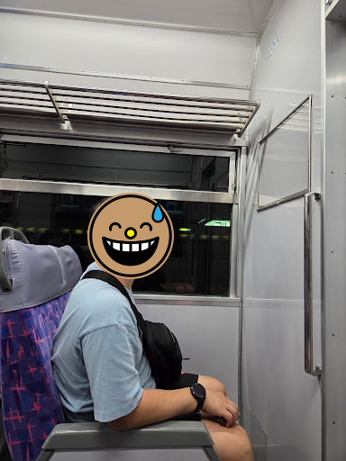
메이테츠 기차는 처음 타 봤는데 한국의 무궁화호 같다고 생각했다. 우리는 자유석을 예매했기 때문에 적당히 좌석 미지정 칸으로 가서 아무데나 앉았다. 따로따로 앉아 있던 승객분들이 우리가 커플인 걸 알고, 의자 등받이를 움직여서 붙어 있는 두 자리를 만들어 주셨다. 아리가또 고자이마스. 나고야 역까지는 30분 정도 걸렸다.
숙소까지는 지하철을 타도 갈 수 있었지만, 이자카야 예약 시간이 빠듯했기 때문에 우리는 역사 밖으로 나오자마자 우버를 불렀다. 에어비앤비로 예약한 숙소는 나고야 중심가에서 꽤 떨어진, 정말 관광하고는 아무런 상관이 없어 보이는 일반 주택단지 안에 있는…멘션? 빌라? 어쨌든 그런 다세대 주택이었다. 건물 공동현관에서부터 열쇠가 필요했는데, 집주인이 사전에 알려준 대로 우편함에 열쇠가 든 자물통이 있었다.
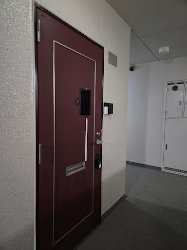
우리 숙소 현관문에는 무인 체크인을 위한 태블릿이 붙어 있었다. 다른 집들은 아무것도 안 붙어 있는 걸로 봐서 그냥 일반인들이 살고 있는 집 같았다. 아마 주변 사람들은 여기가 에어비앤비 숙소라는 걸 다 알 수밖에 없을 것이다.
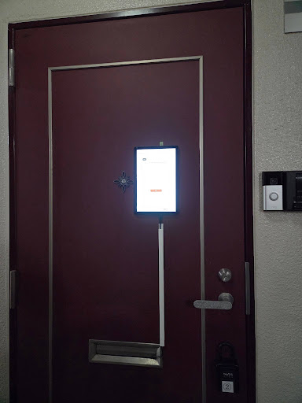
체크인을 하면 아래 2번 자물통에 들어 있는 현관 열쇠를 꺼낼 수 있게 된다.
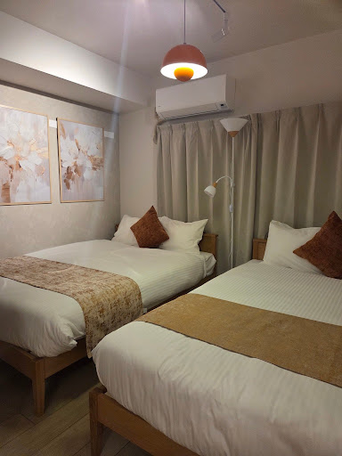
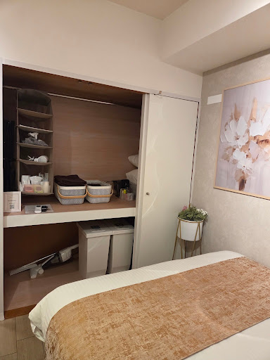
숙소 입성. 트윈베드가 있고 각종 어매니티가 있었다. 일본에 올 때마다 느끼는 것은, 이 나라 사람들은 정말 공간활용의 고수들이다. 면적은 분명 좁은데, 그 안에 어떻게든 필요한 물건들을 ‘쓸 만한 배치로’ ‘잘’ 구겨넣는다.
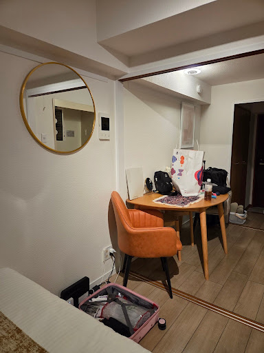
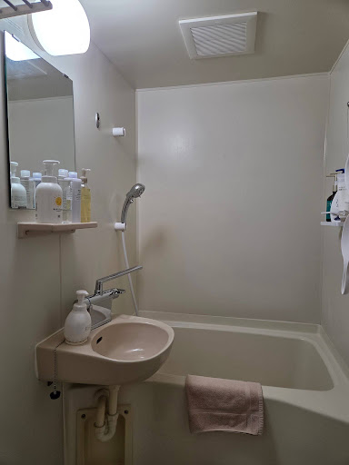
한쪽에 테이블도 있고, 화장실은 변기 칸이 따로 분리되어 있고 세면대 - 욕조가 같이 있었다. 비록 욕조 사이즈는 작았지만, 있을 것은 다 있었다.
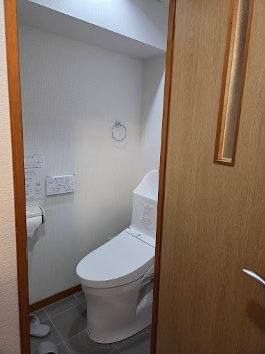
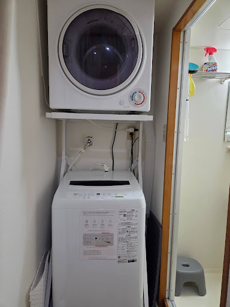
사진에는 안 나왔지만, 변기 칸에도 천장에 선반이 달려 있고 휴지를 비롯한 소모품들이 차곡차곡 정리되어 있었다. 세탁기와 건조기도 꽉꽉 들어차 있다.
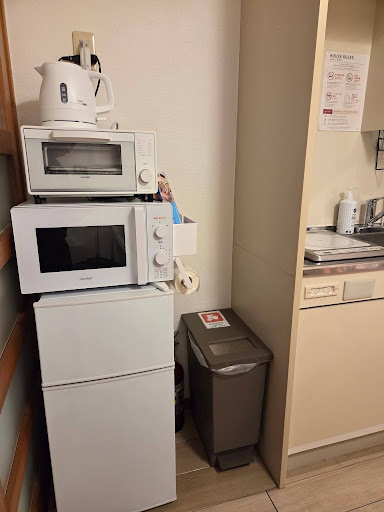
정말 작지만 나름 주방이 있고, 냉장고 전자레인지 소형 오븐까지 있다 ㅋㅋㅋ
사실 이 때에는 숙소를 감상할 시간 같은 건 없었다. 짐을 대충 던져넣고 사진 후루룩 찍은 뒤 우버 불러서 얼른 이자카야로 향했다. 우리의 목적은 그거였으니까. 이렇게 경주마처럼 달려서 성공적으로 도달한 이자카야는 Ibushigin Fushimi炉端焼き燻銀 伏見店라는 곳이었다.
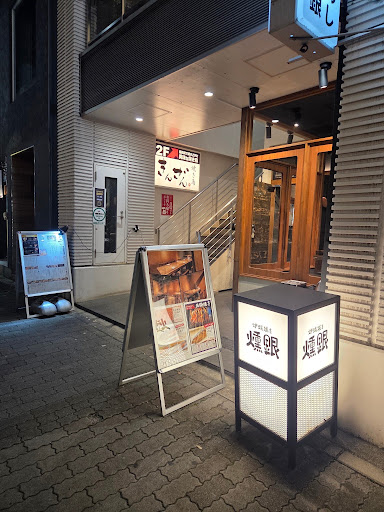
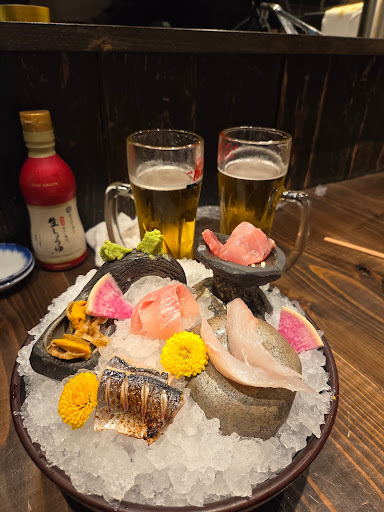
오오… 정말로 오토시로 생선회를 줬…는데…사실 맛은 그냥 그랬다.
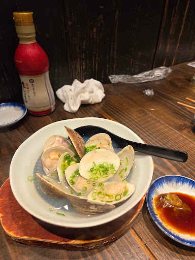
이 집에서 제일 맛있었던 안주는 이거였다. 음식 이름은 기억나지 않는데, 조개 국물이 특히 밸런스가 좋아서 술술 들어갔다.
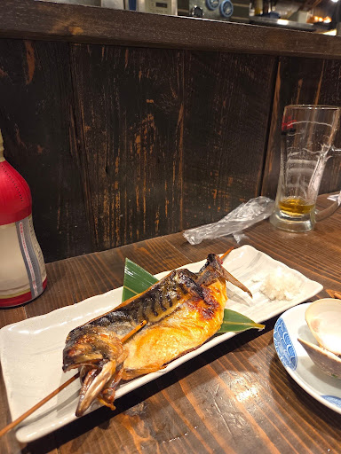
그 다음 순서는 고등어 원시구이. 추성훈 아조씨 유튜브에서도 원시구이를 메인 메뉴처럼 소개했는데, 실제로도 꽤 맛있었다. 가시도 거의 발라져 있어서 뜯어먹기 편했고, 살도 적지 않았고, 고등어였는데도 비린 맛이 덜해서 만족스럽게 먹었다. 원래 원시구이 메뉴가 청어와 금태도 있었는데, 우리가 주문할 때 두 메뉴는 모두 솔드아웃이었다. 그렇다는 것은, 아마 청어나 금태가 고등어보다 더 맛있다는 게 아닐까.
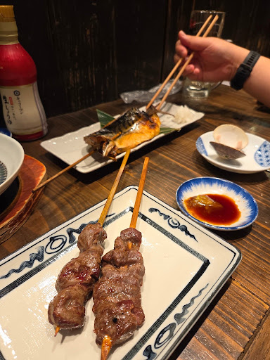
요 메뉴는 소 안창살 구이 꼬치. 한데 추성훈 아조씨 유튜브에서도 언급된 것 같지만, 여기는 육류보다는 해산물을 더 잘 다루는 곳 같았다. 맛은 평범했다는 기억.
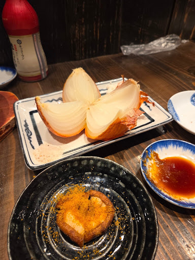
다음으로 시킨 두 안주. 아래는 표고버섯에 어란 가루를 뿌린 거였는데, 크기도 작았을뿐더러, 어란을 처음 먹어보는 나도 분명히 알 수 있었다. 표고버섯과 어란을 조합할 거라면 이것보다 더 맛있게 만들 방법이 있다는 것을.
위에 보이는 건 우리에게 최고의 미스테리였던 양파구이. 겉보기에는 별 것 아닌 간단한 안주 같았다. 이곳은 오픈키친이어서 조리하는 모습이 다 보였는데, 그냥 양파를 석쇠에서 굽고 사등분해 주는 게 전부였다. 그런데 주변 테이블에서도 굉장히 많이 시켜서 꽤 많은 양파들이 우리 눈앞에서 구워져 나갔고, 구글 리뷰에서도, 블로그 리뷰에서도 전부 칭찬 일색이었다. 메뉴판에도 최고 인기 메뉴라고 박혀 있고, 가격도 쌌다. 가장 큰 충격은, 맛이 정말, 진짜 그냥 평범한 양파였다는 것이다. 우리는 예전에 도쿄에 놀러 갔을 때 카레 소스와 튀김가루를 묻혀 튀겨낸 블루밍 어니언을 먹은 적이 있다. 그게 천 배는 더 맛있었다. 그래서 이곳의 양파 구이는 우리에게 미스테리로 남았다. 얘는 대체 왜 그렇게 인기였을까.
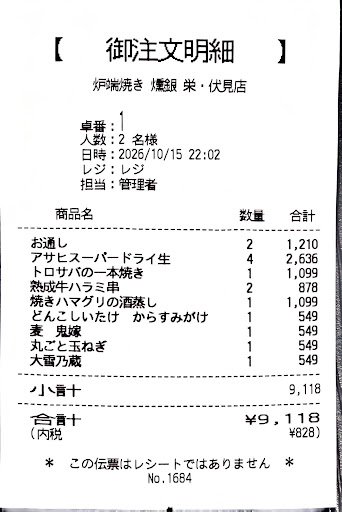
이러나 저러나 폭식 엔딩. 우리가 라스트 오더 시간이 다 돼서 들어갔기 때문에 앉아 있었던 시간은 40분 정도밖에 안 되었는데, 그 시간에 저만큼 먹어치웠다.
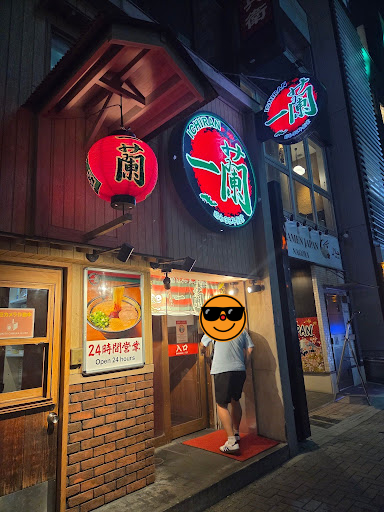
그리고 숙소로 돌아가는 중에 정말 약속한 것처럼 보인 이치란. 다른 우동집 라멘집도 있긴 했지만 H의 강렬한 끌림은 이 날도 여기였다.
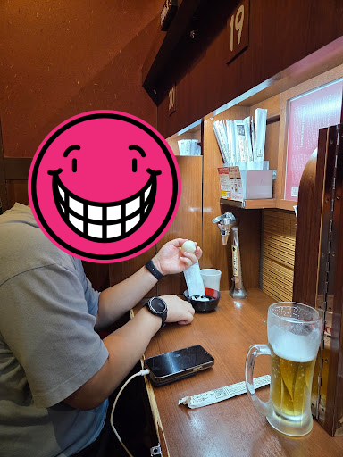
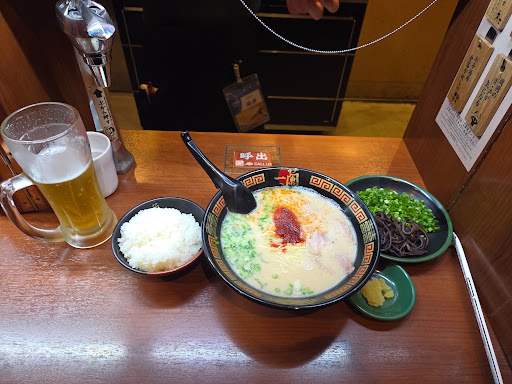
H는 여기서도 나마비루를 주문했지만 나는 술은 더 이상 땡기지 않아서 반숙 계란만 추가했다. 나는 매운 음식을 좋아하지 않지만, 매운맛을 견디는 능력은 생각보다 나쁘지 않다는 걸 최근에 깨달아서, 이 날은 H와 똑같이 맵기 8단계로 라멘을 주문해 보았다. 이치란의 비주얼은 언제나 영롱하다. 맵기 8단계 + 목이버섯 + 대파 + 다진마늘 + 공기밥 + 나마비루는 통칭 ’H 정식’이라고 불린다.
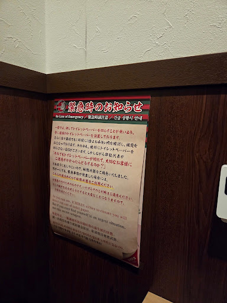
정말 뜬금없게도, 화장실에 간 H가 이 안내문 밑에 유지가 있음을 발견했다 ㅋㅋㅋ
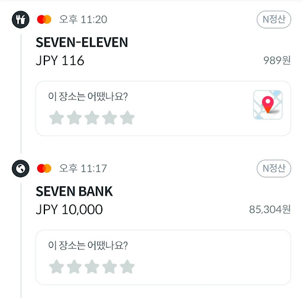
라멘을 다 먹고 숙소로 걸어가는 길에, 편의점에 들러서 화장실도 쓰고 현금도 뽑고, 보리차 한 병도 샀다. 겸사겸사 강나미 유튜브에서 소개해 준 편의점 최강의 오니기리를 사려고 살펴봤는데, 이미 다 나가서인지 하나도 없었다…
숙소 근처에 와서 왠지 그냥 들어가기 아쉬운 마음에, 늦게까지 하는 이자카야가 없나 둘러봤지만 정말 가까이에는 하나도 없었다. 상술했듯 숙소 위치가 완전 주거밀집지역이라 그런지, 가정집들만 주변에 잔뜩이라 밤 늦은 시간에는 쥐 죽은 듯이 조용하고 불도 거의 켜져 있지 않았다.
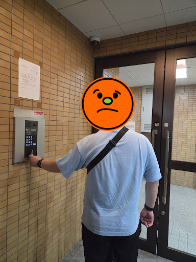
별수없이 귀가. 첫 날이니까 일단 무리하지 않기로 했다.